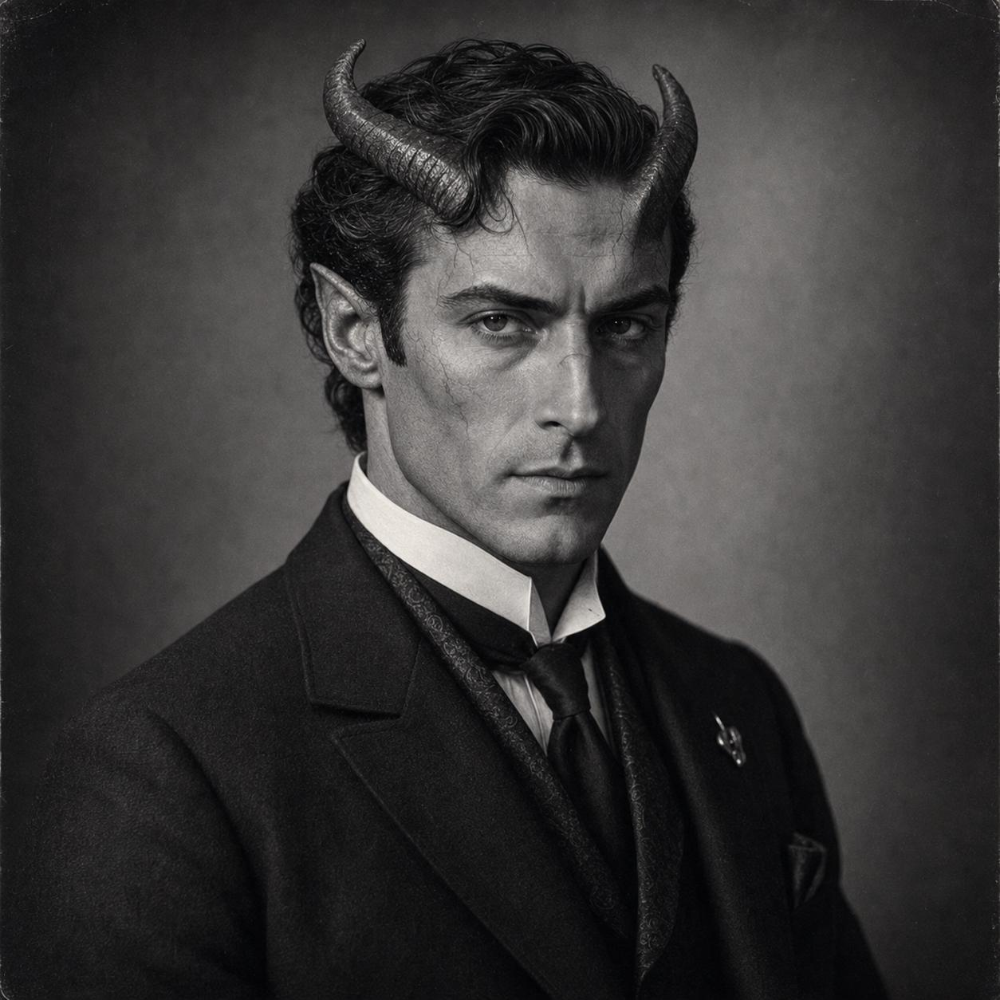

Adrian Draik
Tiefling sorcerer under a glamour amulet - infernal features behind a human face, Magery 3 fire and illusion, and the impeccability of a man who became controlled because anything less would have been fatal.
14 / 12
14
16
12 / 14
6
6.50

Powers
- Magery 3 [35]: full magical capacity expressed through fire and illusion/perception, identical in spell-set structure to Siegfried Vane but with a distinctly infernal rather than draconic register. Where Siegfried is proud and controlled, Adrian is severe and intimate.
- Infernal Amulet (Illusion 18, Power 3) [29]: the device sustaining his human glamour. Same vulnerability structure as Siegfried's Dragon Amulet - breakable, hittable, stealable. If it breaks, the human face drops and the room sees what he actually is.
- DR 10 (Fire) [10]: infernal resistance to fire as a native property, not an acquired one.
- Eidetic Memory 2 [60]: comprehensive retention that compounds his investigative and social intelligence significantly.
- Social skill suite: Acting-18, Fast-Talk-19, Intimidation-19, Sex Appeal-17, Diplomacy-17 - his social toolkit is distinctly more aggressive than Siegfried's. He is a coercer and a seducer where Siegfried is a commander.
FRH Package
- Patron (Followers of the Right Hand) (15 or less) [60]: Equipment: Standard, +5; Special Qualities (Access to Magic in Non-magical World): Very Unusual, +10; Secret: -5; Subtraction (Minimal Intervention): -5.
- Duty (Followers of the Right Hand) (15 or less) [-25]: Involuntary: -5; Subtraction (Extremely Hazardous): -5.
- Enemy (Unknown Enemies of FRH) [-60]: Unknown: -5; Subtraction (Access to Magic in Non-magical World): -15.
Required Secret Power
Tiefling nature and infernal magic (grouped):
- Magery 3 [35] - full magical capacity from infernal inheritance
- Infernal Amulet (Illusion 18, Power 3) [29] - the concealment device with the same structural vulnerability as Siegfried's Dragon Amulet
- DR 10 (Fire) [10] - native infernal fire resistance
- Hideous [-20] - the appearance under the glamour that produces a -4 reaction if seen
Secret (Tiefling under glamour) [-20]: the infernal nature is hidden under the Infernal Amulet. Discovery ends everything.
Secret Identity (Adrian Draik's human face is a glamour) [-10]: the public identity is itself concealment - not merely hidden gifts but a hidden species.
Note on Siegfried Vane: Adrian and Siegfried share the same fundamental structure (nonhuman under amulet-maintained glamour, Magery 3, identical spell list at 19). Their differentiation is in register and social toolkit - draconic vs. infernal, command vs. coercion, pride vs. severity. A party with both would need to manage that overlap deliberately.
Required Secret Society
His kind. Adrian is a Tiefling operating behind a glamour in a world that does not acknowledge his kind exist. Others of his kind who similarly conceal themselves constitute the hidden community — an informal society of concealment rather than a named institutional order.
Secret (Tiefling under glamour) [-20] serves as both the personal secret and the society tie. The glamour is the membership card. A formal Patron advantage is not required. FRH does not count toward this requirement.
How Adrian Uses His Powers
- His fire spell suite - Fireball-19, Explosive Fireball-19, Create Fire-19, Shape Fire-19, etc. - gives him the same offensive magical capability as Siegfried, but his social toolkit makes him more dangerous in soft coercion, seduction, and intimidation sequences before those spells are needed.
- Acting-18 and Disguise-18 at these levels mean he is one of the most capable impersonation and social-infiltration operators in the library - well beyond most investigators who need to enter hostile or closed social spaces.
- Fast-Talk-19 and Intimidation-19 give him a hard-pressure social edge that Siegfried does not carry. He can push a room in ways that read as dangerous even without the glamour slipping.
- His illusion suite - Perfect Illusion-19, Invisibility-19, Blur-19, Darkness-19, Complex Illusion-19 - covers full tactical concealment and field misdirection.
- The Infernal Amulet's same structural vulnerability as the Dragon Amulet creates the same operating discipline: he cannot afford it to break, be hit, or be stolen. His social aggression means he is more likely than Siegfried to provoke the situation where someone tries.
Advantages
Absolute Direction [5]; Alertness +1 [5]; Combat Reflexes [15]; DR 10 (Fire) (Occasional) [10]; Eidetic Memory 2 [60]; Lang: English (Native) [0]; Lang: French (Native) [6]; Lang: Latin (Broken Spoken/Accented Written) [3]; Luck [15]; Magery 3 [35]; Night Vision [10]; Patron (Followers of the Right Hand) (15 or less) [60]; Strong Will +1 [4]; Voice [10].
Disadvantages
Duty (Followers of the Right Hand) (15 or less) [-25]; Enemy (Unknown Enemies of FRH) [-60]; Hideous [-20]; Nightmares [-5]; Secret (Tiefling under glamour) [-20]; Secret Identity (Adrian Draik's human face is a glamour) [-10].
Quirks
Collects old hotel matchbooks from solved cases; Hates being touched unexpectedly; Keeps spare gloves and collar pins for emergency concealment; Smokes when thinking even though brimstone and smoke cling to him; Talks to his amulet before hard cases.
Investigative Role
- Infernal fire and illusion magic specialist
- Social infiltration, coercion, and seduction operator
- Concealed nonhuman presence - infernal register vs. Siegfried's draconic
- Tactical vulnerability anchor (the Infernal Amulet)
Why He Works
Adrian proves that infernal inheritance in 1923 reads darkest when the danger is intimate rather than spectacular. He belongs in smoky cities, coded invitations, compromised clubs, and respectable rooms built over disgrace. The glamour is infrastructure. Without it, the room has to reckon with more than one kind of fire.
Skills
Acting-18 [11/2]; Area Knowledge (New York City)-17 [1/2]; Detect Lies-16 [1]; Diplomacy-17* [1/2]; Disguise-18 [11/2]; Fast-Talk-19 [2]; First Aid/TL6-17 [1/2]; Gesture-17 [1/2]; Guns/TL6 (Pistol)-15 [1/2]; Hidden Lore (Supernatural Creatures)-16 [1/2]; Interrogation-16 [1/2]; Intimidation-19 [2]; Occultism-18 [11/2]; Psychology-16 [1]; Research-16 [1/2]; Sex Appeal-17* [2]; Shadowing-16 [1/2]; Spell Throwing (Ball)-16 [4]; Staff-14 [4]; Stealth-14 [2]; Streetwise-17 [1]; Thaumatology-18* [1].
*Cost modifiers: Voice, Magery as applicable. Source also notes Charisma +3 (Reaction: +3) in skills section - may be a source formatting artifact; included as noted.
Spells (all at skill 19): Blur; Complex Illusion; Continual Light; Create Fire; Dark Vision; Darkness; Detect Magic; Explosive Fireball; Fireball; Heat; Ignite Fire; Infravision; Invisibility; Keen Eyes; Light; Mage Sight; Night Vision; Perfect Illusion; See Invisible; Seek Fire; Sense Emotion; Sense Foes; Shape Fire; Simple Illusion; Sound; Truthsayer.
Equipment (carried): Boots, Leather; Cigarette Lighter; First Aid Kit; Flashlight; Lockpicks (good, Skill 12); Playing Cards; Powerstone (Strength 5); Smith & Wesson M&P .38 Special.
Character Overview
Adrian Draik learned early that survival could depend on the exact degree to which another person was allowed to understand what they were looking at. He was born with an inheritance that did not fit comfortably inside ordinary human society, and the older he grew the clearer that became. There were rooms in which he could pass and rooms in which he could not, social rituals that protected him and others that threatened to turn him into a scandal, a curiosity, or a target. So Adrian cultivated severity the way other men cultivate charm. He learned how to stand perfectly still under attention, how to choose every word, how to let silence do work that less disciplined people try to force with confession or heat.
By adulthood he had made himself into the kind of man polite society could not easily dismiss: elegant, controlled, unmistakably intelligent, and useful in exactly those urban worlds where appetite, status, vice, and occult pressure blur together. Adrian belongs naturally to smoky cities, hidden bloodlines, coded invitations, compromised clubs, and respectable rooms built over disgrace. He is not a noisy sorcerer or a theatrical devil-aristocrat. He is a gentleman whose apparent composure has been hammered into place by the knowledge that his true nature would change the terms of every conversation if it were allowed to stand in plain view. The glamour that helps him move through human society is not vanity. It is infrastructure.
What makes Adrian compelling is that his danger is intimate rather than spectacular. He carries infernal pressure as a social fact, not just a visual one. He understands negotiation, false hospitality, temptation, humiliation, and the soft coercions by which powerful people test who can be bent. If Siegfried is draconic force hidden under civilization, Adrian is darker and closer: the man who can sit across a table from a liar, a collector, a magistrate, or a ruined heir and make them feel that something in the room has become more exacting than they expected. He belongs in FRH because he turns hidden blood, urban occult life, and social passing into first-class investigative terrain.
For a new companion, Adrian should read as a man who became impeccable because anything less would have been fatal. He is not soft, but neither is he empty. His restraint is hard-won, his poise is expensive, and whatever infernal inheritance shaped him has not relieved him of the need to think clearly, choose carefully, and live among people who would prefer their monsters simpler and farther away.